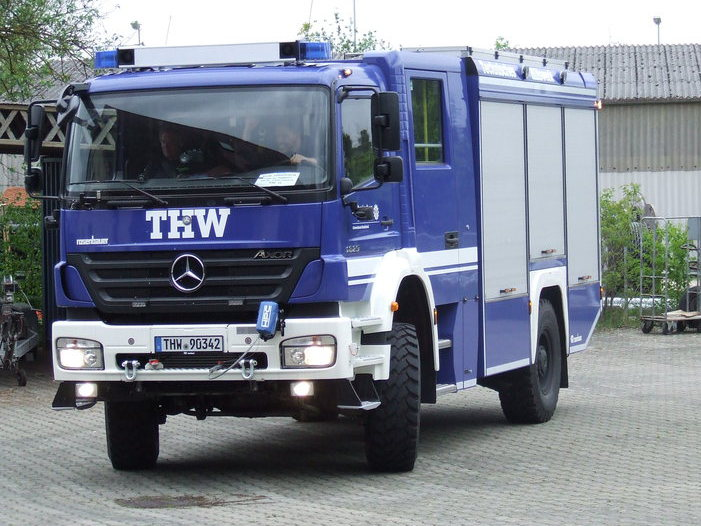

Einheiten-Erfassungsbogen für den Katastrophenschutz Rheinland-Pfalz
Rheinland-Pfalz regelt seinen Katastrophenschutz seit der neuen Katastrophenschutzverordnung (KatS-LVO) vom 4. September 2025 anders als die meisten anderen Länder: Statt fester Einheiten mit Personalstärke und Fahrzeugliste nennt die Verordnung selbst nur abstrakte Fähigkeiten — konkret wird es erst durch die dazugehörige, verbindliche Handlungsanweisung des Landesamts für Brand- und Katastrophenschutz (LfBK). Dieses kostenlose Online-Tool bringt deren „Fähigkeitsmodule" als fertige Beispielbögen mit — du lädst, passt an und übergibst per QR-Code, auch ohne Internet.

37 Beispielbögen nach der KatS-LVO und ihrer Handlungsanweisung
Anders als in Sachsen, Niedersachsen und Thüringen legt die rheinland-pfälzische Verordnung selbst keine Teileinheiten mit Stärke und Fahrzeugen fest. Ihre Anlage 1 nennt nur, wie viele Fähigkeiten wie „Sanitätsdienst — Behandlung" ein Landkreis oder eine kreisfreie Stadt je nach Größenklasse vorhalten muss — ohne Personal- oder Fahrzeugangabe. Erst die „Handlungsanweisung zum Vollzug der Anlage 1 der KatS-LVO" (Stand 18. November 2025, verbindlich im Rahmen der Fachaufsicht) übersetzt jede Fähigkeit in ein konkretes Fähigkeitsmodul mit Fahrzeugen, Zusatzmaterial und Personalstärke (Führer/Unterführer/Mannschaft/Gesamt). Genau diese Module bildet das Tool ab — von der Führungsstaffel über Brandbekämpfung, Technische Hilfe, CBRN-Schutz, Sanitäts-, Betreuungs- und Verpflegungsdienst bis zu Wasserrettung, Rettung aus unwegsamem Gelände, Logistik, PSNV und Bevölkerungsinformation.
- Fähigkeitsmodul wählen — Fahrzeuge und Personalstärke aus der Handlungsanweisung sind vorbelegt, du bestätigst statt abzutippen.
- Stärke geprüft — jeder Bogen wird beim Erzeugen gegen die amtliche Personalstärke (Führer/Unterführer/Mannschaft/Gesamt) der Handlungsanweisung geprüft.
- Ehrlich markiert, was nicht amtlich geregelt ist — welche Organisation ein Modul trägt, sagt die Handlungsanweisung nur für ein einziges Modul (das Landesanalysesystem bei der Berufsfeuerwehr Ludwigshafen). Für alle anderen ist die Trägerzuordnung hier plausibel, aber frei gewählt und im Bogen vermerkt.
In der App findest du die Bögen unter „Beispielbögen" → „Katastrophenschutz" → „Rheinland-Pfalz". Jeder Bogen ist ein Startpunkt: Standort und tatsächliche Besetzung passt du an und speicherst das Ergebnis als eigene Vorlage.
Kräfteerfassung im Verband
Rücken mehrere Fähigkeitsmodule gemeinsam aus, sammelt die Einsatz- oder Verbandsführung die einzelnen Bögen in der App unter einem Einsatz: Die Stärken werden laufend summiert, der Verband meldet geschlossen weiter — als Sammel-PDF, Datei oder QR-Code. Dieselbe Funktion trägt den Meldekopf am Bereitstellungsraum.
Gemacht für den Ausfall der Infrastruktur
Katastrophenschutz heißt: Es ist mit dem Ausfall von Strom, Mobilfunk und Internet zu rechnen. Die App arbeitet nach dem ersten Aufruf vollständig offline, speichert ausschließlich lokal auf dem Gerät und übergibt Bögen per QR-Code von Bildschirm zu Kamera — ohne Server, ohne Kopplung, ohne Netz.
Häufige Fragen zum Katastrophenschutz Rheinland-Pfalz
Warum stehen bei manchen Fähigkeitsmodulen Stellen ohne besondere Qualifikation?
Die Handlungsanweisung nennt in der Spalte „Besondere Qualifikation" nur die Rollen, die eine Sonderausbildung brauchen (z. B. „8 AGT"). Reicht deren Zahl nicht bis zur amtlichen Mannschaftsstärke, füllen generisch benannte Stellen ohne Sonderqualifikation auf — ein Hinweis dazu steht im Feld „Sonstiges" jedes betroffenen Bogens.
Warum fehlt „Logistik — Instandsetzung stationär" (LOG-01)?
Für dieses Fähigkeitsmodul weist die Handlungsanweisung ausdrücklich keine Personal- oder Fahrzeug-Umsetzung aus: Es wird zentral durch das LfBK am Standort Koblenz abgebildet und ist keine von Landkreisen oder kreisfreien Städten vorzuhaltende Einheit.
Sind die Vorlagen amtlich?
Nein — sie sind aus der öffentlich zugänglichen KatS-LVO und der verbindlichen Handlungsanweisung des LfBK abgeleitet und sorgfältig geprüft, aber kein amtliches Dokument. Maßgeblich bleibt die Landesregelung; deshalb kannst du jede Vorbelegung frei anpassen.
Was ist mit anderen Bundesländern?
Weitere Landesvorlagen liegen für Baden-Württemberg, Bayern, Berlin, Brandenburg, Hessen, Mecklenburg-Vorpommern, Niedersachsen, Nordrhein-Westfalen, Saarland, Sachsen und Thüringen bereit — eine Übersicht gibt die Seite Katastrophenschutz der Länder. Fehlt deins, kannst du jeden Bogen frei ausfüllen und selbst als Vorlage speichern.